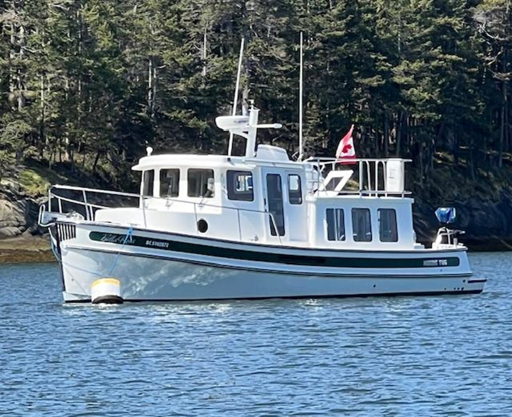

Nordic Tugs 32
1985–2012
The Nordic Tug 32 expanded the original tug concept into a more substantial one-cabin pilothouse cruiser with a semi-displacement hull and single diesel shaft drive. Early boats are roughly 32 feet overall, while later versions gained appendages and platform length as the design evolved toward the later Nordic Tug 34. The model remains primarily a couple-cruising boat with a lower pilothouse, salon and convertible guest accommodation.

- Length
- 32.08 ft
- Beam
- 11 ft
- Draft
- 3.5 ft
- Hull behaviour
- Semi-Displacement
- Fuel
- Diesel
- Propulsion
- Shaft
- Engine configuration
- Single inboard diesel
- Boat family
- Tug
- Construction
- Fiberglass
Best for
- Couples wanting a traditional pilothouse cruiser without moving into 37-foot dimensions
- Great Loop, inland and coastal cruising
- Owners valuing single-engine simplicity and enclosed helm protection
Trade-offs
- Production evolution makes published LOA, draft and weight figures inconsistent
- One private cabin limits guest privacy
- Machinery and tank access vary with year and refit history
- More substantial than the 26 and not realistically trailerable for routine use
Known concerns
- No model-specific concern has been promoted to B-Scout’s evidence threshold. This does not mean the model has no age-, condition- or hull-specific risks.
Inspection focus
- Confirm model year, engine installation and any repower work
- Inspect pilothouse windows, cabin-top and deck penetrations for moisture intrusion
- Inspect fuel and water tanks, fill/vent hoses and access
- Inspect exhaust, cooling, shaft, rudder and steering systems
- Review electrical upgrades and owner modifications
Continue researching
Related boat models
34.92 ft · Semi-Displacement
26.33 ft · Semi-Displacement
39.83 ft · Semi-Displacement
40 ft · Semi-Displacement
44.67 ft · Semi-Displacement
32.08 ft · Semi-Displacement
About this record
B-Scout preserves uncertainty: missing information remains unknown rather than being treated as a negative. Specifications and guidance describe the model record; individual boats can differ by year, equipment, refit and condition.